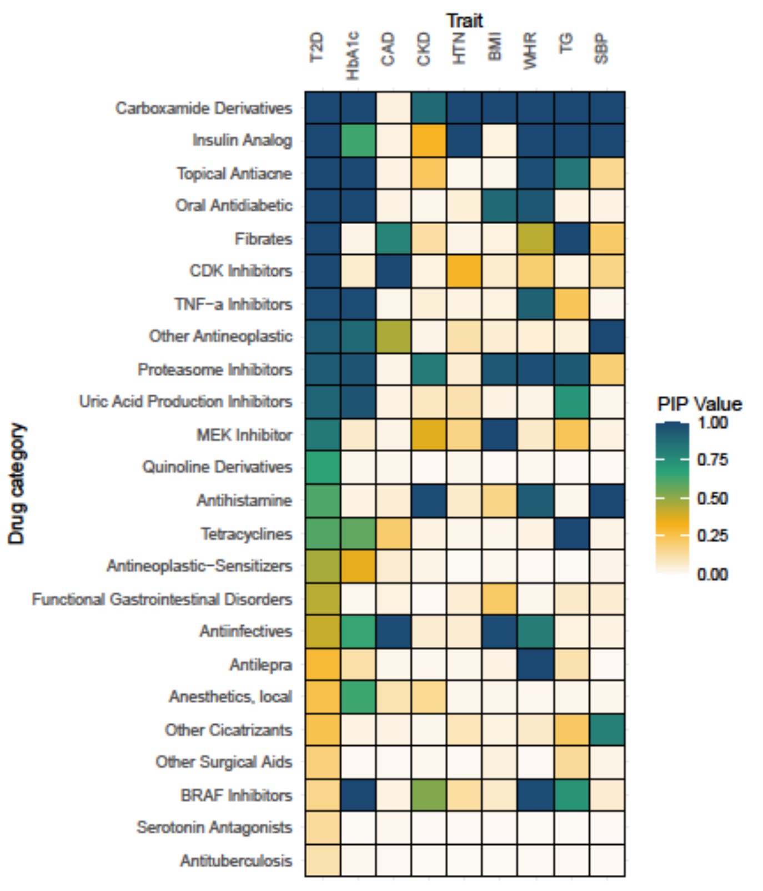
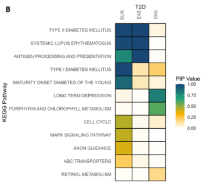

Bayesian Gene Set Analyses
Introduction to Integrative Genomics (gact)
Why Integrate Diverse Data Sources?
- Complex traits arise from interacting molecular layers — genetic, transcriptomic, proteomic, and metabolic.
- Single data types provide only partial insights complex biological systems (GWAS: DNA → disease phenotype)
- Integration connects variants → genes → pathways → phenotypes may help reveal molecular mechanisms that drive traits and diseases.
- Enables functional interpretation, better prediction, and new discoveries across molecular systems.
From Data Integration to Discovery

The gact R Package
gact provides an infrastructure for efficient processing of large-scale genomic association data, with core functions for:
- Establishing and populating a database of genomic associations
- Downloading and processing biological databases
- Handling and processing GWAS summary statistics
- Linking genetic markers to genes, proteins, metabolites, and biological pathways
- Integrates with statistical machine learning tools in the qgg R package
gact is intended to serve as a practical implementation of integrative genomics, bridging statistical modeling and biological interpretation, and supporting reproducible and extensible workflows.
Integrating Data with gact
The gact() function is a single R command that creates and populates the Genomic Association of Complex Traits (GACT) database.
It automates three main tasks:
- Infrastructure creation – sets up a structured folder-based database
(glist,gstat,gsets,marker,gtex,download, etc.) - Data acquisition – downloads and organizes multiple biological data sources
(e.g., GWAS Catalog, Ensembl, GTEx, Reactome, STRING, STITCH, DGIdb) - Marker and feature set generation - integrates data across sources to create curated genomic feature sets that form the basis for the integrative genomic analyses.
Biological Databases Used by gact
gact constructs gene and marker sets from a wide range of curated biological databases:
- Ensembl — genes, transcripts, and proteins
- Ensembl Regulation — regulatory genomic features
- GO, Reactome, KEGG — ontology and pathway sets
- STRING, STITCH — protein and chemical complexes
- DrugBank, ATC — drug–gene and drug-class associations
- DISEASE — disease–gene associations
- GTEx — eQTL-based gene sets
- GWAS Catalog — trait-associated variants and genes
- VEP — functional variant annotations
We plan to add additional biological resources in gact.
From Database to Model Inputs
The gact R package includes utility functions to extract and structure data from the GACT database into analysis-ready inputs — \(\mathbf{Y}\) (e.g., summary statistic outcomes) and \(\mathbf{X}\) (genomic or biological features).
getMarkerStat()— retrieve GWAS summary statistics (Y’s)
getFeatureStat()— extract gene-, protein-, or pathway-level results (Y’s)
getMarkerSets()— define biological groupings (basis for X’s)
designMatrix()— build feature matrices (X) linking variants or genes to biological feature sets
Together, these functions form a reproducible workflow for generating standardized input data for Bayesian Hierarchical Models and other machine learning approaches.
Introduction to Bayesian Hierarchical Models (qgg)
Bayesian Hierarchical Models
Bayesian Hierarchical Models provide a flexible statistical framework for modeling complex biological and healthcare data.
They support key applications such as:
- Genome-wide association studies (GWAS) and fine-mapping of causal variants
- Polygenic risk scoring (PRS) for predicting complex traits and disease risk
- Gene and pathway enrichment analyses to test biological hypotheses
- Integrative multi-omics modeling across the genome, transcriptome, epigenome, and proteome
These models build directly on the Y’s and X’s generated by gact, providing a unified framework for integrative genomic analysis.
The Bayesian Linear Regression Model
The Bayesian Linear Regression (BLR) model builds:
\[ \mathbf{Y} = \mathbf{X}\boldsymbol{\beta} + \boldsymbol{\varepsilon}, \qquad \boldsymbol{\varepsilon} \sim \mathcal{N}(0, \sigma^2 \mathbf{I}) \]
- \(\mathbf{Y}\) represents the observed outcomes or association measures corresponding to the features in \(\mathbf{X}\).
- \(\mathbf{X}\) represents molecular or genomic predictors (e.g., genotypes, gene scores, annotations, pathway indicators).
- \(\boldsymbol{\beta}\) — effect sizes quantifying how features in \(\mathbf{X}\) explain variation in \(\mathbf{Y}\)
- \(\boldsymbol{\varepsilon}\) — residual noise capturing unexplained variation
In the Bayesian formulation, each \(\beta_j\) is assigned a prior distribution reflecting beliefs about effect size magnitude or sparsity and determine how information is shared across features or biological layers.
Why Bayesian Hierarchical Models?
Regression effects can be estimated in many ways, but we focus on a Bayesian hierarchical framework because it:
- Combines data and prior knowledge to improve inference
- Provides a natural way to regularize and handle noisy or high-dimensional data
- Enables flexible modeling of diverse effect patterns:
- Many small vs. few large effects
- Structured effects (e.g., by pathway, gene set, or omic layer)
- Many small vs. few large effects
- Returns uncertainty estimates for all parameters → improving interpretability and model comparison
Through their hierarchical structure, BLR models naturally integrate multiple biological layers — linking genomic, transcriptomic, and other molecular data
Hierarchical Structure
The three levels in the model:
| Level | Description | Example |
|---|---|---|
| 1 | Describes how data are generated given parameters | \(y \sim \mathcal{N}(Xb, \sigma^2 I)\) |
| 2 | Describes our beliefs about the parameters before seeing data | \(b_i \sim \mathcal{N}(0, \sigma_b^2)\) |
| 3 | Describes uncertainty about the prior’s parameters | \(\sigma_b^2 \sim \text{Inv-}\chi^2(\nu, S^2)\) |
This hierarchical structure allows the model to learn how strongly to shrink effect estimates from the data, while accounting for uncertainty in prior parameters and automatically regularizing effect sizes.
Simple and robust, but may not capture diverse effect-size distributions.
Adapting to Complex Biological Architectures
Complex traits arise from heterogeneous effect-size distributions — some features have large effects, many have small, and others are likely null. To capture this diversity, the BLR framework can be extended in two ways:
Data-driven grouping of molecular features:
The model learns effect-size classes from the data using a mixture of variances \(\{\tau_k^2\}\) with probabilities \(\{\pi_k\}\).Biologically informed grouping of molecular features:
The model uses prior biological knowledge to assign features to groups a priori, each with its own variance \(\tau_g^2\) capturing within-group variability.
Both approaches enable the model to adapt to complex genetic and molecular architectures and share information across related features or omic layers
Indicator Variables and Posterior Inclusion Probabilities
In Bayesian variable selection, each feature \(j\) is assigned an indicator variable:
\[ \delta_j = \begin{cases} 1, & \text{if feature $j$ has a non-zero effect} \\ 0, & \text{if feature $j$ has no effect.} \end{cases} \]
After inference, we estimate \(\text{PIP}_j = P(\delta_j = 1 \mid \text{data})\) — the posterior inclusion probability for feature j.
Summary of BLR Model Structures
| Model Type | Prior Structure | Biological Interpretation |
|---|---|---|
| Single-component BLR | One global variance \(\tau^2\) | All features (across layers) share the same level of shrinkage — equal contribution assumption |
| Multiple-component BLR | Mixture of variances \(\{\tau_k^2\}\) | Features belong to different effect-size classes (e.g., large, small, null); grouping learned from data |
| Hierarchical (Biologically informed) BLR | Group-specific mixtures of variances \(\{\tau_{gk}^2\}\) | Features grouped a priori (e.g., by genes, pathways, or omic layers); within each group, effects can vary in size and sparsity |
These models form a hierarchy of increasing flexibility and biological realism —
from global shrinkage → to data-driven heterogeneity → to biologically structured mixtures that model variation within and between feature sets.
Motivation for Multivariate BLR
Many traits and molecular layers are correlated — they share genetic architecture and biological pathways.
To model these dependencies, we extend BLR to the multivariate setting:
- Jointly models multiple traits or omic layers
→ captures shared genetic or molecular effects
- Borrows strength across correlated traits
→ improves fine-mapping resolution and prediction accuracy
- Estimates cross-trait effect patterns
→ helps identify pleiotropic genes and shared biological pathways
The Multivariate Bayesian Linear Regression (MV-BLR) Model
In the multivariate BLR model, we model multiple correlated outcomes jointly:
\[ \mathbf{Y} = \mathbf{X}\mathbf{B} + \mathbf{E} \]
- \(\mathbf{Y}\): \((n \times T)\) matrix of outcomes
(e.g., association measures for \(T\) traits or omic layers)
- \(\mathbf{X}\): \((n \times p)\) feature matrix
- \(\mathbf{B}\): \((p \times T)\) matrix of effect sizes
- \(\mathbf{E}\): \((n \times T)\) residual matrix
Each row of \(\mathbf{Y}\) corresponds to an observation or gene, and each column to a trait, phenotype, or molecular layer.
Multivariate Error and Effect Priors
We extend the univariate priors to the multivariate setting:
\[ \mathbf{e}_{i\cdot} \sim \mathcal{N}_T(\mathbf{0}, \boldsymbol{\Sigma}_e) \] \[ \mathbf{b}_j \sim \mathcal{N}_T(\mathbf{0}, \boldsymbol{\Sigma}_b) \]
- \(\boldsymbol{\Sigma}_e\): residual covariance among traits
- \(\boldsymbol{\Sigma}_b\): covariance of effect sizes across traits
- When \(\boldsymbol{\Sigma}_e\) and \(\boldsymbol{\Sigma}_b\) are diagonal, the model reduces to \(T\) independent univariate BLR models.
Allows information sharing across correlated traits or omic layers and can be used to identify pleiotropic effects and cross-trait genetic architectures.
Multivariate BLR (Structured MV-BLR)
The hierarchical structure can be extended to model multiple traits
while preserving biological grouping of features:
\[ \mathbf{b}_j \sim \mathcal{N}_T\!\big(\mathbf{0}, \boldsymbol{\Sigma}_{b, g(j)}\big), \qquad \boldsymbol{\Sigma}_{b, g} \sim p(\boldsymbol{\Sigma}_{b, g}) \]
- Each biological group \(g\) has its own trait-level covariance matrix \(\boldsymbol{\Sigma}_{b,g}\)
- \(\boldsymbol{\Sigma}_{b,g}\) captures correlations and scale of effects across traits within that group
Enables information sharing both within biological sets and across correlated traits.
Indicator Variables and PIPs (Multivariate BLR)
In the multivariate BLR, each feature \(j\) may affect multiple outcomes (traits).
We extend the indicator variable to capture cross-trait activity patterns:
\[ \boldsymbol{\delta}_j = \begin{bmatrix} \delta_{j1} \\ \delta_{j2} \\ \vdots \\ \delta_{jT} \end{bmatrix}, \qquad \delta_{jt} = \begin{cases} 1, & \text{if feature $j$ affects trait $t$} \\ 0, & \text{otherwise.} \end{cases} \]
After inference, we estimate \(\text{PIP}_{jt} = P(\delta_{jt} = 1 \mid \text{data})\) — the posterior inclusion probability that feature j affects trait t.
Interpreting Posterior Inclusion Probabilities (PIPs)
- PIPs quantify the probability that a feature is truly associated with one or more outcomes.
- High PIPs (e.g., > 0.9) indicate strong evidence for inclusion.
- A probabilistic view of how molecular variation drives outcomes
- Patterns in \(\boldsymbol{\delta}_j\) reveal shared vs. trait-specific effects — all zeros (no effect), few ones (trait-specific), many ones (shared or pleiotropic).
BLR Models in Integrative Genomics
| Model Type | Feature Integration | Grouping Basis | Prior Structure | What It Captures |
|---|---|---|---|---|
| Single-component BLR | Combines all biological features in one model | None | One global variance (\(\tau^2\)) | All features contribute equally; uniform shrinkage |
| Multiple-component BLR | Integrates all layers but allows heterogeneous contributions | Learned from data | Mixture of variances (\(\{\tau_k^2\}\)) | Large, small, and null effect classes |
| Hierarchical BLR | Groups features by biological structure (e.g., genes, pathways) | Defined a priori | Group-specific mixture of variances (\(\{\tau_{gk}^2\}\)) | Within-group heterogeneity; enrichment and structured shrinkage |
| Multivariate BLR | Jointly models multiple correlated traits or outcomes | None or by trait | Shared covariance (\(\boldsymbol{\Sigma}_b\)) across traits | Genetic/molecular correlations; pleiotropy |
| Hierarchical MV-BLR | Combines biological grouping and multiple outcomes | Defined a priori | Group- and trait-specific covariance mixtures (\(\{\boldsymbol{\Sigma}_{b,gk}\}\)) | Shared biological mechanisms across traits and layers |
Learning at Different Levels
| Model Level | Key Parameters Learned | What They Represent | How They Are Learned | What We Learn Biologically |
|---|---|---|---|---|
| Effect sizes | \(\boldsymbol{\beta}\) | Strength and direction of association for each feature | Posterior mean/median given priors and data | Which features drive the outcome |
| Indicator variables | \(\delta_j\) (single trait), \(\boldsymbol{\delta}_j\) (multi-trait) | Whether feature \(j\) is active (and for which traits) | Estimated as posterior inclusion probabilities (PIPs) | Which features are relevant, and whether effects are shared or trait-specific |
| Variance components | \(\tau^2\), \(\{\tau_k^2\}\), \(\{\tau_{gk}^2\}\) | Magnitude of expected effect sizes; heterogeneity across layers or groups | Inferred hierarchically from the data (via MCMC or EM) | How strongly different groups or omic layers contribute |
| Covariance components | \(\boldsymbol{\Sigma}_b\), \(\{\boldsymbol{\Sigma}_{b,g}\}\) | Correlation of effects across traits or molecular layers | Estimated from joint posterior | Shared pathways, pleiotropy, and cross-layer architecture |
Bayesian Linear Regression for Polygenic Risk Scoring
Bayesian Linear Regression (BLR) provides a probabilistic framework for estimating genome-wide effects used in polygenic risk scores (PRS).
\[ \mathbf{y} = \mathbf{X}\boldsymbol{\beta} + \boldsymbol{\varepsilon}, \qquad \boldsymbol{\varepsilon} \sim \mathcal{N}(0, \sigma^2 \mathbf{I}) \]
After fitting the BLR model:
- Posterior means \(\hat{\boldsymbol{\beta}} = E(\boldsymbol{\beta} \mid \text{data})\) represent regularized SNP effect estimates.
- Individual-level PRS values are computed as:
\[ \text{PRS}_i = \sum_j X_{ij} \, \hat{\beta}_j \]
The qgg R Package
qgg provides tools for statistical modeling and analysis of large-scale genomic data, including:
- Fine-mapping of genomic regions using Bayesian Linear Regression (BLR) models
- Polygenic scoring using Bayesian Linear Regression (BLR) models
- Gene set enrichment analysis using Bayesian Linear Regression (BLR) models
qgg handles large-scale genomic data through efficient algorithms and sparse matrix techniques, combined with multi-core processing using OpenMP, multithreaded matrix operations via BLAS libraries (e.g., OpenBLAS, ATLAS, or MKL), and fast, memory-efficient batch processing of genotype data stored in
binary formats such as PLINK .bed files.
Tutorials using the qgg and gact R packages
Gene analysis using VEGAS: Gene analysis using the VEGAS (Versatile Gene-based Association Study) approach using the 1000G LD reference data processed above,
Gene set analysis using Bayesian MAGMA: Pathway prioritization using a single and multiple trait Bayesian MAGMA models and gene-level statistics derived from VEGAS (Gholipourshahraki et al.2024).
Gene ranking using PoPS: Polygenic Prioritization Scoring (PoPS) using BLR models and gene-level statistics derived from VEGAS (work in progress).
Finemapping using BLR models: Finemapping of gene and LD regions using single trait Bayesian Linear Regression models (Shrestha et al.2025).
Polygenic scoring using BLR models: Polygenic scoring (PGS) using Bayesian Linear Regression models and biological pathway information (work in progress).
Polygenic scoring using PGS Catalog: Polygenic scoring (PGS) using summary statistics from PGS catalog and biological pathway information.
LD score regression: LD score regression for estimating genomic heritability and correlations.
Summary
From Data Integration to Modeling
Bridges data integration, statistical modeling and biological interpretation, enabling reproducible and extensible workflows.
Integrates biological information across molecular layers — from genome to pathways, complexes, and drug–gene interactions
Uses structured priors and hierarchical modeling to share information, regularize effect estimates, and quantify uncertainty
Enables data-driven discovery and prediction
Next Steps
- Apply the framework to new and relevant use cases
- Expand integration with more biological data resources
- Incorporate additional statistical and machine learning methods
Further Reading and Collaboration
💡 We are open to collaboration!
If you’re interested in applying BLR methods or contributing to the gact framework, please reach out.
Further Reading
References
Sørensen P, Rohde PD. A Versatile Data Repository for GWAS Summary Statistics-Based Downstream Genomic Analysis of Human Complex Traits.
medRxiv (2025). https://doi.org/10.1101/2025.10.01.25337099
Sørensen IF, Sørensen P. Privacy-Preserving Multivariate Bayesian Regression Models for Overcoming Data Sharing Barriers in Health and Genomics.
medRxiv (2025). https://doi.org/10.1101/2025.07.30.25332448
Hjelholt AJ, Gholipourshahraki T, Bai Z, Shrestha M, Kjølby M, Sørensen P, Rohde P. Leveraging Genetic Correlations to Prioritize Drug Groups for Repurposing in Type 2 Diabetes. medRxiv (2025). https://doi.org/10.1101/2025.06.13.25329590
Gholipourshahraki T, Bai Z, Shrestha M, Hjelholt A, Rohde P, Fuglsang MK, Sørensen P. Evaluation of Bayesian Linear Regression Models for Gene Set Prioritization in Complex Diseases. PLOS Genetics 20(11): e1011463 (2025). https://doi.org/10.1371/journal.pgen.1011463
Bai Z, Gholipourshahraki T, Shrestha M, Hjelholt A, Rohde P, Fuglsang MK, Sørensen P. Evaluation of Bayesian Linear Regression Derived Gene Set Test Methods. BMC Genomics 25(1): 1236 (2024). https://doi.org/10.1186/s12864-024-11026-2
Shrestha M, Bai Z, Gholipourshahraki T, Hjelholt A, Rohde P, Fuglsang MK, Sørensen P. Enhanced Genetic Fine Mapping Accuracy with Bayesian Linear Regression Models in Diverse Genetic Architectures. PLOS Genetics 21(7): e1011783 (2025). https://doi.org/10.1371/journal.pgen.1011783
Kunkel D, Sørensen P, Shankar V, Morgante F. Improving Polygenic Prediction from Summary Data by Learning Patterns of Effect Sharing Across Multiple Phenotypes. PLOS Genetics 21(1): e1011519 (2025). https://doi.org/10.1371/journal.pgen.1011519
Rohde P, Sørensen IF, Sørensen P. Expanded Utility of the R Package qgg with Applications within Genomic Medicine. Bioinformatics 39:11 (2023). https://doi.org/10.1093/bioinformatics/btad656
Rohde P, Sørensen IF, Sørensen P. qgg: An R Package for Large-Scale Quantitative Genetic Analyses. Bioinformatics 36(8): 2614–2615 (2020). https://doi.org/10.1093/bioinformatics/btz955
Gene Set Analyses using Bayesian Linear Regression Models
Gene Set Analyses
Gene and biological pathway prioritization can provide valuable insights into the underlying biology of diseases and potential drug targets.
MAGMA: Multi-marker Analysis of GenoMic Annotation (Leuww et al 2015) generalized gene set analysis of GWAS data
- Compute gene-level association statistics (\(y\))
- Create a design matrix based on annotation (\(X\))
- Fits single or multiple regression models (\(y=Xb\))
- Identifies associated features using standard procedures (e.g., t-tests)
Gene-level Association Statistics

Compute gene-level (or other feature-level) association statistics:
- Account for correlation among marker statistics (i.e., linkage disequilibrium, LD)
- Different LD-adjustment methods (e.g., SVD, clumping and thresholding, BLR)
- The choice of method depends on the quality of the available GWAS summary statistics and LD reference panel
Bai et al., 2025
Bayesian MAGMA

- Fits a Bayesian regression model that allows regularization and variable selection
- Supports single- or multi-trait analyses
- Identifies associated features based on posterior inclusion probabilities (PIPs) for the regression effects
Gholipourshahraki et al., 2024
Bayesian MAGMA – KEGG Pathway
- GWAS summary statistics from nine studies (T2D, CAD, CKD, HTN, BMI, WHR, Hb1Ac, TG, SBP)
- Gene sets are defined by genes linked to KEGG pathways.
- Posterior inclusion probabilities (PIPs) quantify the degree of association between gene set and diseases
- Pathways relevant to diabetes are associated with Type 2 Diabetes (T2D) and correlated traits
- Enables identification of cross-disease patterns to better understand comorbidities

Gholipourshahraki et al., 2024
Bayesian MAGMA – DGIdb
- Gene sets are defined by genes linked to the Anatomical Therapeutic Chemical (ATC) classification system using the Drug–Gene Interaction Database (DGIdb)
- Drug gene sets relevant to diabetes show associations with Type 2 Diabetes (T2D) and related traits
- Novel drug–gene set associations may reveal opportunities for drug repurposing

Hjelholt et al., 2025
Bayesian MAGMA – Across Ancestries
- Gene sets are defined by genes linked to KEGG pathways.
- Joint analysis of T2D across three ancestries (EUR, EAS, SAS).
- Pathways relevant to diabetes show associations with Type 2 Diabetes (T2D) across two of the ancestries (EUR and EAS).
- Comparing these associations helps reveal ancestry-specific biological mechanisms.
